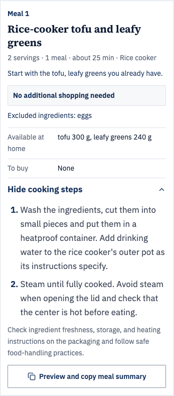
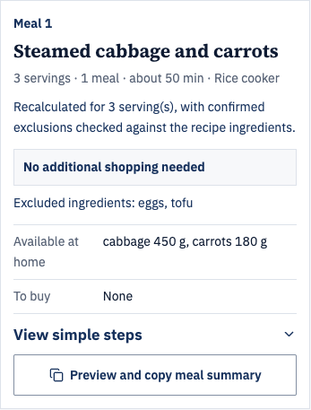
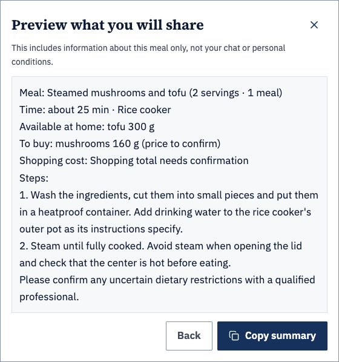

USERS · LIVE BROWSER WALKTHROUGH
Each role began with the same request: two servings, tofu and greens, rice cooker, no eggs, and a NT$80 budget.
Older adult

Two choices. Opened the steps for a dish made from the pantry.
Caregiver

Three initial choices. After the update, both exclusions stay visible.
Relative

Three choices and a preview showing what to buy and which price to check.
Production screenshots, 28 November 2026. Codex operated the app with fictional inputs.
CareKitchen · WAICY 2026 · Track 4: LLM & AI Agent